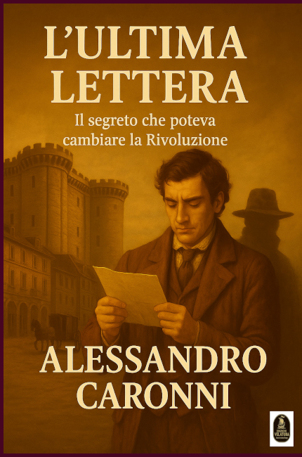
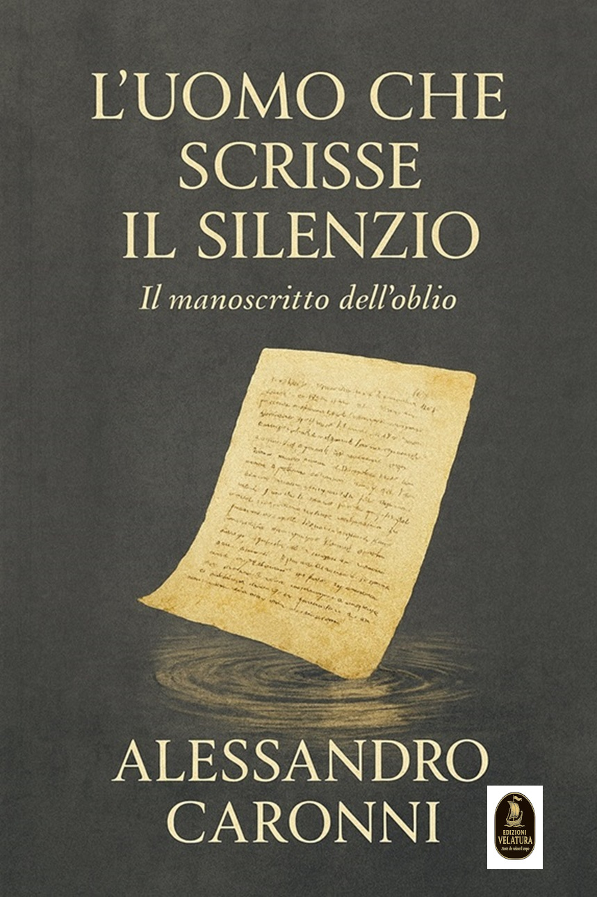
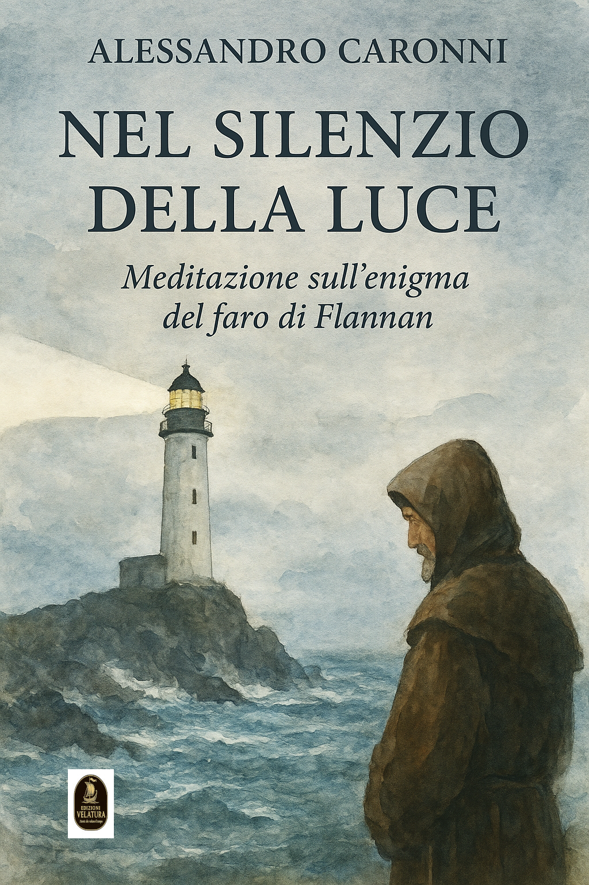
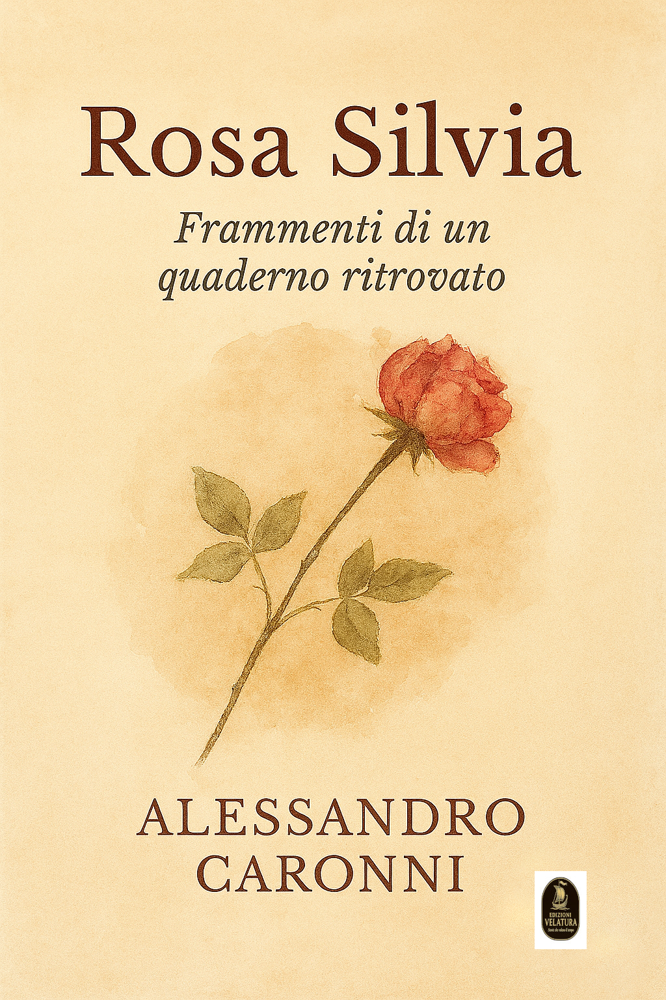
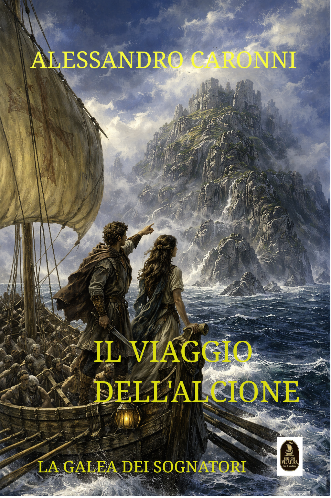

Edizioni Velatura
I Nostri Libri

L'ultima lettera
Due epoche in un'unica trama: la Parigi della Belle Époque e l’eco della Rivoluzione francese.

L'uomo che scrisse il silenzio
Romanzo psicologico dalle tinte gotiche che indaga le profondità del rancore e il paradosso della vendetta.

Nel silenzio della luce
Il libro prende spunto dal mistero storico della scomparsa dei tre guardiani del faro di Flannan nel 1900..
Burgaria
Un intreccio tra storia, leggenda e soprannaturale attorno al castello di Corbetta e alla stirpe dei Sambonifacio.

Rosasilvia
Una storia vera. Il racconto della vita interiore di Rosa Silvia, una donna che attraversa l’esistenza con un amore incompiuto come compagno silenzioso.

Il viaggio dell'Alcione
Roberto, figlio del Conte Tommaso, desidera vedere le leggendarie Onde Luminose prima di accettare un matrimonio combinato.